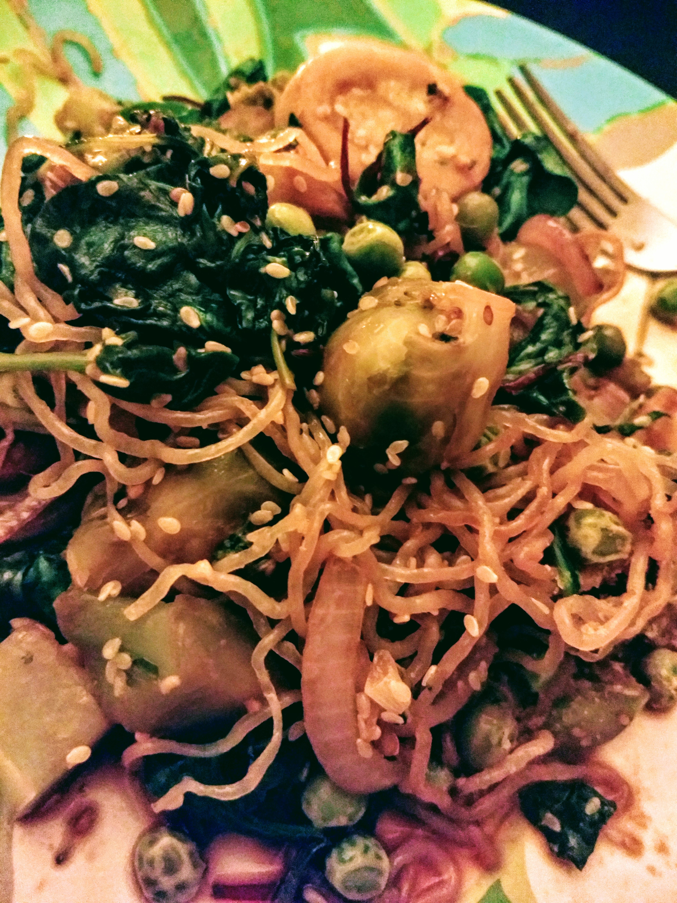
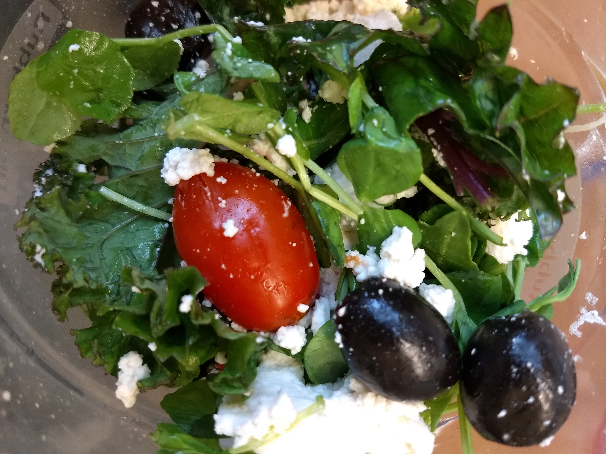
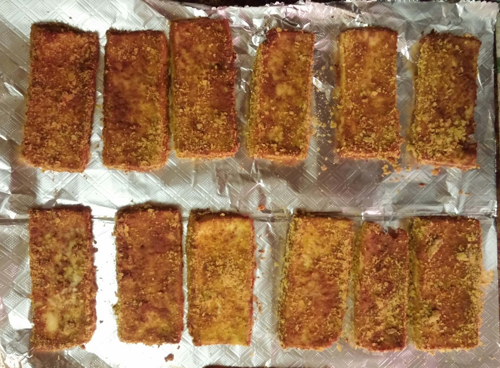

Jennie D's Beginners' Guide
To Eating Vegan Food
The purpose of this site is to answer the frequent questions I am asked about my veganism.
Also, I have a secret agenda to instill a love of vegan foods in all people no matter what their eating preferences.
DISCLAIMER:
Although I tell myself I make convincing arguments regarding the nutritional viability of veganism,
I am not a nutritionist and have absolutely no degrees or qualifications of any kind in this arena.
This page should not be taken as medical advice!
I am merely a bright eyed lover of vegan food expressing my affection.

Who
Me, you, and meat-eaters too! A popular myth about vegan food is that it is boring, tasteless, and mostly consistent of salads. On the contrary, vegans desire filling and wholesome foods just like meat-eaters do! Some examples are peanut noodle salads, macadamia nut creamy dip sauce, tamari almond stuffed portobello mushrooms, applie pie, orzo stuffed peppers, and more! Vegan food is creative food and that's something everyone can appreciate.
What
on WikipediaWhy
Strict veganism is a personal choice that is not well suited for everyone. There are very good arguments both for and against long term veganism. I choose veganism it because the food energizes me; I love the food! Also, it's a fun and interesting way to experience the world. That being said, it is impossible for anyone to be 100% fully vegan. The best one can do is eat things that are vegan to the best of your knowledge and always be re-evaluating how veganism makes you feel and whether it suits you. I don't think you should become vegan unless you want to be vegan, but trying out (and possibly getting addicted to) some amazing vegan meals is a must for all humans!
Where
Vegan food is everywhere and interesting vegan food is on the rise. I wish it were realistic for me to recount all my international vegan experiences, but it's not! Instead, I direct you to HappyCow.net, where you can radially locate many vegan foods from anywhere in the world simply by entering an address. For those interested, you can register on the happycow site and help us happycow-ers continually expand the list of food establishments!
How
Nutrients |
Coffee with soy creamer and baguettes slathered with earth balance -- while both delicious -- should not be the sole ingredients of a vegan diet. Vegans need the same nutrients meat-eaters do. The following links address commonly held vegan beliefs regarding commonly cited deficiencies of the vegan diet. The quick and dirty way to use this information is to click the links, then scroll down 'till you see a chart of foods, then eat those foods! After your belly is happy and full, go back and read the bulk the websites at a leisurely pace.
- This short summary of the benefits of kale is a good representative of vegan mentality regarding the nutritional viability of omitting animal products from the diet.
- Protein sources
- Fat sources
- For B-vitamins:
Nutritional Yeast (my fave usage is sprinkling on rice and veg dish)
Odwalla B-Monster
B-vitamins can also be found in fortified cereal, soy milk and fake-meat analogues, but this varies with product and manufacturer so the labels have to be checked. The amount of B-vitamins provided can be small in some of these products. - These webpages for Calcium, Magnesium and Iron accurately describe what I eat on a regular basis. The charts/lists of foods on these webpages are practically an inventory of my kitchen (a.k.a. what I look for on a menu)!
- For omega-3 fatty acids, this is one of my fave soymilks. Also, the seeds found here seem helpful, but I have still not mastered incorporating them into my cooking [cite laziness, see below*]. Finally, we also have the supplemental vegan DHA flax oil and this vegan alternative to fish oil. Recently I found this total omega vegan swirl 3-6-9 product that is great for smoothies or just in a tablespoon straight out of the bottle !
- For iodine, EAT SEAWEED! You can find seaweed in vegan veggie sushi and wakame miso soup, for example. Also, here's an awesome seaweed snack.
- I am addicted to Superfood. I don't understand why it makes you feel so good (green magic?). It's much better than coffee as a pick-me-up -- probably due to all that delicious algae. Algae delicious? Yep that's what I said! A variety of other such invigorating juices are made by Naked, Odwalla, Bolthouse Farms and Columbia Gorge Organic. For a less-dense drink I also enjoy this black currant juice.
A few months after putting together the above list, I have finally came across one single website that has all the tables and charts of vegan food I was looking for! Here's the link!!!Googling "vegan multivitamin" brings up tons of stuff that addresses vegan needs.
In my search to collect this information, I found myself gravitating towards the following pages. I am sure there are many more.
- http://www.vrg.org/nutrition/
- http://www.veganhealth.org/
- http://www.thetastyvegan.com/vegan-nutrition/
Substitutions |
| Not Vegan Product | Vegan Product |
|---|---|
| Milk | Rice milk, hemp milk, almond milk, oat milk, coconut milk, soy milk. There are so many flavors and brands, it's mind boggling! Don't give up! Just keep trying them until you find one you like, and talk to your friends about recommendations. I am partial to the Silk and Organic Valley brands of coconut and soy milks, but also like Rice Dream or Almond Dream for something lighter. The newest products are mixing types, such as cashew-almond milk etc. -- they are highly delicious and have inspired me to mix together a few of my favorite brands into a single glass. :D |
| Margarine and butter | Earth Balance spread (or other vegetable-based spread) |
| Nutella Spread | Almond butter, peanut butter. |
| Cheese | Here's a handy list of vegan cheeses. In my personal opinion vegan cheese is tricky and can sometimes taste questionably. I advise you to try things out in small quantities and to keep an open mind about vegan cheese in general even if you try one that you dislike. Scheese and Daiya vegan cheeses have recently gained popularity, but in my opinion they will be surpassed by the newest better evolutions of vegan cheeses. My latest favorites are Treeline vegan spreadable cheeses and Chao sliced cheeses. Also, this vegan mozzarella is amazing and very hard to stop eating (however I'm not a fan at all of the cheddar version of the same product). Tofutti sliced vegan cheese is a great one for sandwiches, and Wayfare Cheddar Spread is my one of my favorites for crackers. This is also a good place to reemphasize amazingly delicious homemade vegan mac and cheeze. Until recently I would never have recommended buying store bought vegan mac and cheese, but I just found the new Earth Balance mac and cheese and it's great! In case you are set on homemade, this recipe using a blended nutritional yeast, earth balance, mustard, cashew, miso, etc. mix as cheese is simply amazing and addicting. Here are some recipes I tell myself I will have time to try one day: Raw Almond Cheeze Raw Walnut Cheddar Cheeze Macadamia Nut Cheeze Vegan Goat Cheeze Cashew Cheeze Any Nut Cheeze Also, here's a vegan cheese recipe book that looks interesting. |
| Cream Cheese | Vegan cream cheese is a safe bet regarding deliciousness. I have never been disappointed. I've tried this one and that one. |
| Sour Cream | Vegan sour cream! Yup, it's that simple! Just take your favorite dip recipe and use this stuff instead of dairy sour cream. This product is so good, no one will ever know the difference and it can be an eye opening experience about how good and creamy food can be without needing animal products. |
| Mayonnaise | Veganaise! Again, I find this stuff amazing and it's the type of product that can fool the non-vegan with it's amazing deliciousness. |
| Yogurt | I enjoy coconut milk yogurt, but soy yogurt and other analogous products also exist. |
| Ice cream | The variety of products offered by SoDelicious and Tofutti grows exponentially, it's exciting! I just discovered a brand called Cashewtopia and they have vegan pistachio! |
| Breakfast eggs | Mash up firm tofu then saute with oil and whatever spices and veggies you can find. I like mushroom and spinach with tumeric and paprika. 2019 UPDATE: New vegan egg products are shaking up the industry! Check out my vegan egg reviews below! |
| Egg sandwich | Marinade a slice of firm tofu
in miso and soy sauce then fry it up with nutritional yeast and put it on a (vegan) bagel. Did
I mention Veganaise (mayo substitute) and vegan sliced american
cheese? These can be found at your local Stop 'n Shop. |
| Eggs for baking | Ener-g Egg Replacer Powder, applesauce, milk substitutes or some combination of these. |
| Bacon and hot dogs | Vegan bacon and vegan hot dogs: again, these can be found at your local Stop 'n Shop! Also, marinaded tempeh that is ready-to-fry is another yummy bacon substitute. |
| Burger | Vegan burger. Unfortunately you need to read ingredients or ask questions at a food establishment since not all vegetarian burgers are vegan (also, some restaurant workers will not know what vegan means, so be prepared for a possibly unproductive or unfriendly conversation if you choose to ask). The good news is that there are plenty of vegan burger recipes online and frozen vegan burgers like Boca and Sunshine in your grocery store. |
| Boring salad with no dressing | Quinoa salad, Potato salad, Tabouleh, and/or Salad with some subset of the following ingredients: fried tempeh strips, tofu, hummus or baba ganoush, avocado, pine nut, walnut, sunflower seeds, almond slices, cranberry, apple slices, etc.. A few vegan salad dressings are tahini dressings, various vinnaigrette dressings, (non-creamy) italian dressing, oil and vinegar etc.. |
| Meat and potatoes | Rice and veg |
| Other Meats & Seafood | Meat substitutes get a bad rep because they take practice to cook skillfully, but what delicious steak or salmon or turkey doesn't also take skill and practice? The most reliable places to try out perfectly prepared, amazing vegan mock meats are at designated vegan or vegetarian asian restaurants. A few examples in the Boston area are My Thai Vegan Cafe on Beacon St. or The Grasshopper Restaurant in Allston. Great vegan meat substitutes are everywhere, though. You'll be surprised what you find if you keep your eyes open. In addition to various products available at grocery stores, you can try out tempting products like Match Meats! |
| Lasagne | Vegan Lasagne, best if made with veggie protein (fake ground beef) and Tofutti vegan ricotta cheese |
| Pizza | Soy cheeze pizza, no cheeze pizza, no cheese veggie lovers' pizza from your local pizza establishment, or very awesome fully blown vegan cheeze and veggie pizza from somewhat rare places like this. |
| Ramen noodles | Noodle bowls such as these or those or these ones. |
| White/brown sugar | My understanding is that traditionally produced white sugars are made white by adding a bone char, and that brown sugar = white sugar + molasses. This may not be the case for all white and brown sugars, but really being sure about the details takes research. For sure, cane sugar and raw sugar are vegan. I do very much like my coffee regularly so; if raw or cane sugar is not available and I am feeling like unsweetened coffee will make me feel a little grumpy; I do often conceed and have a little sugar. We all have our vices! :) |
| Honey | Since honey is a bee byproduct it is not vegan. Another argument that vegans make is that the traditional practice of clipping the queen's wings to prevent the bees from swarming (i.e. flying away) does not constitute ethical treatment of bees. Some beekeepers do not clip wings, and hence let the bees fly away as they please. I think that in this latter case the beekeeper must purchase a queen after the bees depart of their own free will. This seems equally problematic in terms of a coherent scheme for vegan morality since my understanding is that the queen is purchased and comes in the mail in a box! The reality is that each vegan makes their own personal choice regarding whether or not to eat honey from the latter, arguably more ethical, beekeeper. Honey is not so important to me, so my personal choice is to just omit it by default. One can easily find vegan substitutes for baking or for adding sweetness to your tea. Some examples of vegan sweeteners include maple syrup, agave and brown rice syrup. |
| Milk or White Chocolate | Dark chocolate or other dairy free chocolate. It doesn't have to be (and often isn't) labeled as specifically vegan. Just read the ingredients! I am tempted to google "vegan chocolate" to aggregate some links, but if you like chocolate you're probably excited enough about chocolate to do that yourself. Another snacking alternative is carob coated rice cakes: they are pretty intriguing and delicious. I found them at my local health food store. |
| Cookies | The most popular and easy to find vegan cookies are made by Boston Cookies and the Alternative Baking Company -- both have a wide array of vegan cookies that will amaze you. Newman Organics is not a strictly vegan company but they make vegan analogues to popular cookies like oreos and fig newtons, and I am keen on their ginger cookies. Recently I discovered quinoa cookies made by Andean Dream. |
| Cupcakes | Vegan cupcakes. Seriously, google it, make it, or find it at your local bakery. Everyone loves vegan cupcakes. |
| Banana cream pie | Vegan banana cream pie |

Most people agree that the most nutritious and tasty foods are whole and unprocessed foods.
For example, a handcrafted nut or lentil burger beats a frozen Boca burger any day!
Also, I have read many warnings about consuming an excess of soy products so
I try to save tofu, soy milk, Tofutti ice cream or vegan hot dogs as a treat for special occasions.
Jennie's Vegan Egg
|
Orgran's Vegan Easy Egg

- Link to Orgran's product page.
- WHAT IS IT?
This product is a shelf stable powder made out of mostly chickpea flour. To make the egg batter, the directions say to just add water. To cook it, fry the egg batter in an oiled pan. - CAN YOU FLIP IT?
I had a hard time flipping this with only the water added, as was directed by the box. The above picture was my second try when I added in a bit of milk and coconut flour in my attempt to make a sort of "egg pancake" shape. It worked. I recommend this method. (Sorry I didn't measure.) - DOES IT COOK THROUGH?
Both of my trials looked visually as cooked but did not taste as cooked in those areas where the batter was thick. I still need to do another trial where I make the total fried amount much thinner to see if the overall result can be better. - IS IT GOOD?
It has a salty and light fluffy taste. I thought it was pretty yummy. The thin crispy pieces were my favorite. It is good enough that I will definitely keep working on perfecting my cooking technique (i.e. thickness). Next time I will be adding garlic too because I like a bolder taste. Another idea is to add the cheese powder straight into the batter. More updates later! - WHAT IS THAT CHEESE?
The picture shows Beyond Better Sunflower Sauce, it is good stuff. - PROS
shelf stable, powder for baking, mixes well with other products - CONS
long cooktime, more difficult to cook through, thick parts can taste uncooked
Sperofoods's Vegan Scramblit

- Link to Sperofood's product page.
- WHAT IS IT?
This product is a refridgerated liquid made out of mostly pepitas (pumpkin seeds). You must consume the bottle within a few days of opening it. To cook it, pour the batter straight out of the bottle into an oiled pan. - CAN YOU FLIP IT?
Yes. Right out of the bottle this product flips well. I tried one experiment with adding milk and coconut flour but I DO NOT recommend this and I had a harder time flipping it with the extra ingredients added. - DOES IT COOK THROUGH?
Yes. Right out of the bottle this product crisps on the outside and cooks on the inside. - IS IT GOOD?
It has a salty and bold taste. I thought it was very yummy. - WHAT IS THAT CHEESE?
The picture shows Violife Just Like Chedder Shreds, it is good stuff. - PROS
great straight out of the bottle, no added ingredients needed just pour it, distinct taste - CONS
must eat whole bottle within few days, bold taste may not combine well with other products
Recipe Links |

*I am a pretty lazy person when it comes to cooking (hence click-scroll-eat above). Most of the time I prefer to be brooding about a math problem or choking someone out on the mat. Among the gazillions of resources out in the world, here are the ones I have found myself gravitating towards over the years.
Books
- Vegan Yum Yum
- The Garden of Vegan
- The Mediterranean Vegan Kitchen
- Ani's Raw Food Kitchen
- Sinfully Vegan
- Vegan Comfort Food
- reFresh Restaurant Cookbook
I don't actually have this last book, but recently I went to the restaurant in Toronto, ON. It was AMAZING! It was the best vegan food I have had in my life. Where else can you go and find FIVE CHOICES of vegan burgers?!? Nowhere, my friends, no where.
- veganblackmetalchef.com
- epicureanvegan.com
- veganyumyum.com
- fatfreevegan.com Another disclaimer: I don't agree with promoting a fat free diet. Fats are essential to a well-rounded diet and are vital for bodily functions. Nonetheless, this website is great for recipes!
- chezbettay.com
- Cheap Fast Vegan Food
-
Dips
- Pumpkin spice cashew "cheese" dip
- Some hummus I have a vague recollection of making and liking
Pasta - Pasta with broccoli-pine nut pesto
- Soba noodles with tahini veggie sauce
- Soba noodles with veggies and almond butter sauce
- Dipping sauce for soba noodles
- Pasta shells filled with soy ricotta spinach and pumpkin
Potatoes - Chickpea Cheeze Sauce Scalloped potatoes
- Crash hot potatoes
- Potato-leek breakfast casserole which looks scary awesome but I haven't tried
Legumes, tofu and other protein - Grilled marinated tofu
- Ultra easy lentils
- Moroccan lentils
- Sprounted lentil burger fried
- Sprounted lentil burger baked
- Quinoa lentil casserole
- Almond portabella mushroom bake
- A useful scribble I found in the margin of a printed recipe:
Black eyed peas sauteed with a tomato pureed, paprika, red pepper flake, pepper and salt.
Veg - Bok choy and green onions
- Sorry, there's not much in this category because I don't
usually get fancy with veg. I absolutely love the pure taste of super
fresh steamed veg, or a simple saute with oil and soy sauce.
Desserts - Apple crisp
- Vegan cake by WholeFoods
- Cheesecake, pumpkin cheesecake and a graham cracker crust that you can veganize yourself
A fun game to play is to bring a vegan pumpkin cheesecake to Thanksgiving dinner and see how long it takes for people to start asking questions. The most delicious nonvegan pie on the table will rival the vegan cheesecake.
- Seedlander crackers with hummus and fresh guacamole
- Roasted Chickpea Snack !
- this superfood snack
- dark chocolate covered coffee beans !!!! :D
- aloe water with wheatgrass !
- superfood crunch bars
- tamari almonds
- Glutino brand (gluten free) pretzels
- Red hot blues tortilla chips
- Sabra brand garlic hummus
- avacado hummus a.k.a. guacamole hummus
- superfood drinks
- roasted seaweed snack
- red seedless grapes
- strawberries, blueberries and kiwi
- espresso chocolate chip Boston brand cookies
- veganized carrot cake with cream cheeze frosting
- chai tea with soy milk (just the tea, not the sugary mixes)
- Tofutti brand non-dairy "iced cream" sandwiches
- Newman brand gingersnaps
- quinoa or black bean tortilla chips with salsa, vegan cream cheeze and guacamole
- putting nutritional yeast on basically anything makes it taste like a snack :)
(nachos, rice-n-beans, rice-n-veg, vegan pizza, pasta, fake meat stir fry) - Swiss chard smoothies
- frozen vegan pizza
- Fried tempeh sandwich!
- seiten strips sauteed with vegan worcestershire sauce, soy sauce, garlic and chili/ceyenne/onion powders... with wild rice and pea greens!
- the last bullet's leftovers sauteed with beans and Lee Kum Kee black bean garlic sauce IN TACO with vegan cheeze and greens!
- Orzo stuffed peppers: tomato sauce, thyme, oregano, chili powder, paprika, pea greens and sauteed garlic, mushroom, seitan. Yup there's more: little substitute vegan cheeze by processing macadamia nuts, pine nuts and garlic!
- rice, beans and kale!
- Trader Joe's tofu burger on a sesame bagel with soy cheese and pan fried greens
- A bagel sandwich: half edamame hummus, half cilantro-jalapeno hummus, falafel, tofutti ricotta cheeze, avacado, fresh basil, onion and green pepper
- falafel or sunshine burgers in a salad or sandwich !
- Konared superfruit juice
- dips from this dip company
- Edamame hummus avocado carrot cucumber sushi!
- Quinoa cookies
- Pomegranate green tea
- Coconut flavored coconut milk frozen non-dairy treat
- Coconut macaroons
- vegan soups (check labels)
Jennie's Recipes |
Super Quick Curry Kale & Potatoes
- Cut up small potatoes and cook: boil or bake. Optional: add any spices/oil. You can use leftover potatoes or stockpile potatoes for the week -- this makes the recipe Super Quick!
- Curry spice pack does not need to match exactly as shown! You can find something similar at your local Indian Grocery store.
- Combine in pot:
- 1 tbsp curry spice for each 1/2 cup of water (double check against spice packet instructions, may vary)
- cooked potatoes and raw kale, any amount desired
- Boil until heated.
- Amounts are easily customized. Add more water/spice if more of a soup consistency is desired.
- Contents are easily customized. Use any veg!
Quick Pesto Cauliflower Stirfry

- Fry with small bit of oil: frozen riced cauliflower, chopped onion, sweet corn, and brocolli bits.
- Once thawed add vegan pesto to the pan, cook for 5 more mins.
Customizable Sprout & Veg Stirfry


left pic = cauliflower rice version (no soy sauce), right pic = miracle noodle version (w/ soy sauce)
- Fry with small bit of sesame oil any green veggies:
- frozen broccoli
- frozen green beans
- Throughout cooking process add spices: garlic, onion powder, ginger, paprika, pepper, salt, other spices you prefer
- Once frozen veg almost cooked also add:
- either riced cauliflower (frozen, packaged, or home-riced) or miracle noodles
- sprouted lentils (here's a sprout video).
- any other fresh veg such as sliced mushroom or zucchini
- Top with fresh greens, if you got 'em!
- Soy sauce or Braggs Liquid Aminos will give it that stirfry taste.
- Optional: nutritional yeast, ether while cooking or afterward.
MEGAVEG Stirfry

- Fry with small bit of sesame oil :
- sesame seeds
- garlic & ginger
- sliced red onion
- miracle noodles
- Also boil frozen veggies:
- cauliflower, broccoli, squash/zuchini mix
- peas
- brussel sprouts
- Once the frying pan mix is very fragrant and the boiling veggies are fully cooked, strain the veggies and toss them into the pan with the rest. Mix up and add fresh greens for a few more minutes, adding a bit of soy sauce too.
- Optional: nutritional yeast, ether while cooking or afterward.
Jennie's Awesome Pesto Mush

- Use fresh vegan pesto from your local health food store.
- Mix pesto, amount to taste, together with:
- leftover or pre-cooked spiced/baked potato chunks
- a package of miracle rice (or miracle noodles) rinsed
- a few handfuls of de-stemmed kale pieces
- Microwave for a few minutes until heated.
Sesame Delight

- Saute frozen brussel sprouts, carrot, any veg, and sesame seeds too until browned.
- Add riced cauliflower too.
- Add spices: ginger, paprika.
- While above is cooking, mix the tahini miso sauce in a food processor. Below is the rough ratio which you can multiply as needed based on quantity.
- 1 tbsp miso (any kind)
- 1 tbsp tahini
- generous amounts of garlic and onion powders, whatever seems right!
- 1/4 cup unsweetened milk (almond, coconut, any)
- 1/2 cup water
- Add the sauce and a little kale into the pan, then let everything warm for a few more minutes.
Less Boring Salad

- Salads can be boring. Choose greens you are excited to eat like:
- Pea Greens!
- Red Curly Kale!
- Use something yummy like Kite Hill Vegan Ricotta cheese
- Add fresh tiny tomatoes, black olives, and walnuts or spiced pepitas!
Tempeh Salad for lettuce wrap

Put in a food processor:
- 1 block raw tempeh, any type
- 1 regular sized carrot
- 1 small red onion
- small blob vegan cheese (optional)
Jennie's Awesome Miso Garlic Soup

I list this recipe per-two-cups, so multiply by however many cups you desire.

I'm not sure how most people manage to make miso soup that is smooth, mine always comes out lumpy. :/
So I devised this GENIUS PLAN: put the following items in a blender !!!
- 2 cups of water
- 2 tbsp white miso paste
- 1 tbsp garlic powder
- 2 tsp veg. broth base (optional)
Drain the noodles. Finally put everything below into a pot and simmer it all, heating gently until warm enough to eat.
- the miso/garlic/broth mixture from the blender
- the drained cooked rice noodles
- one handful of fresh chopped bok choy leaves
- one handful of fresh basil leaves
- one handful of small cubed firm tofu
Baked & "Breaded" Tofu

- Press a block of tofu for about 15mins. You can do this by stacking a plate and some cans on top of the fresh block of tofu.
- Cut the block into slices.
- Soak each slice for a few seconds into a pool of soy sauce.
- "Bread" each slice using a mix of nutritional yeast, garlic powder, curry powder, and tumeric. (sorry, I didn't measure! use your judgement)
- Lay each piece flat and bake at 400-deg for 20-25 mins.
Lentil Cilantro Tahini Spread ("Lentil Hummus")

- Put into food processor or blender:
- 2 cups sprouted lentils, or 2 cups cooked brown lentils (probably any color is good!)
- 1 cup tahini (highly recommend ethiopian or israeli)
- juice from 1 small lemon
- 3-4 garlic cloves
- 2 tbsp onion powder
- pinch of salt
- one handful chopped cilantro
- tiny bit of water, add as needed, JUST enough to blend well
Veggie and/or Fruit Muffins
(good recipe for the shredded veg/fruit that is left over from juicing!)


left pic = zucchini-apple, right pic = beet-carrot
- Preheat oven to 350 deg.
- Mix dry ingredientns in large bowl:
- 1.5 cup oats
- 1.5 cups flour
- 1/2 cup sugar
- 2 tsp baking powder
- 2 tsp cinnamon
- 1/2 tsp salt
- Mix liquids in small bowl:
- 2 tsp vanilla
- 2 tsp egg replacer powder
- 1/3 cup water or milk of choice (soy, coconut, cashew, hemp, whatevs)
- 1/3 cup oil of choice (I like coconut)
- Pour liquid mixture in with dry ingredients. Then add 2 cups grated/shredded veg and/or fruit. Here are some ideas:
- 1 cup apple, 1 cup zucchini
- OR
- 1 cup zucchini, 1 cup carrot
- OR
- 1 cup carrot, 1 cup beet
- OR any other combo
Quick Chick Pea Salad

- Mix in large bowl:
- 2 cans well-rinsed chick peas
- 8-10 baby carrots shredded in blender or chopped
- 1/2 red onion chopped
- 2-3 small salad tomatoes chopped
- 3 celery sticks chopped
- enough chopped kale and/or basil to look nice (eyeball it)
- enough sliced olive pieces to look nice
- Pick your spices to taste: paprika, onion powder, mustard powder, salt, pepper, and/or nutritional yeast
- I prefer to refrigerate without adding any sauces, then add sauces on serving (stays good longer). For sauces, pick your preference(s) to taste: vegan mayo, dijon mustard, and/or tahini. My favorite sauce is the Peanut Tahini Sauce seen below (scroll down to soba noodle recipe, same sauce is great here too!)
Quick Soba Noodles

- Cook a 12oz box of soba noodles according to directions
- In last minute or so of cooking, add to water spinach and julienned carrots. Drain when veggies tender and pasta cooked.
- Make Peanut Tahini Sauce:
- 1.5 tbsp natural peanut butter
- 1.5 tbsp tahini (such as Mighty Sesame brand or Shirley Bar Ethiopian Tahini... or wholefoods brand is good too!)
- 1.5 tbsp Annie's Goddess dressing
- 1.5 tsp soy sauce
- a few splashes of water and some crushed garlic to taste
- Mix the noodles and veggies with the sauce.
- This dish is great with nutritional yeast and black pepper !
Mac and Cheeze (Pic shows cauliflower & potato version)

I've tried many different versions of vegan mac and cheeze, the most successful of which came from the VeganYumYum site. Eventually I came to slightly modify the recipe based on the ingredients and dish size that have the highest probability of being found in my kitchen. Here goes, this makes 8 servings:
- Preheat oven to 400 deg.
- If you want the pasta version, make one 16oz package of brown rice pasta according to package, but cook for 2-3 minutes less than instructions (it will finish cooking in the oven). Any pasta is ok here.
- If you want the cauliflower version, cut up one large cauliflower head into small pieces. Then boil the pieces for about 5 minutes (it will finish cooking in the oven).
- If you want the potato version, cut up 7-8 medium size potatoes. Then boil for about 5 minutes (it will finish cooking in the oven).
- Mix the following cheeze sauce ingredients in food processor or blender:
- handful of raw unroasted/unsalted cashews
- 1/2 can chickpeas
- 1 small carrot
- one inch x one inch small cut piece of daiya gouda style vegan cheese
- 2 tbsp Earth Balance margarine
- 2 tbsp miso
- 2 tbsp tahini
- 2/3 cup nutritional yeast
- 2 tbsp tomato paste or 2 small salad tomatoes
- 1 tsp dijon mustard
- 1 tsp garlic powder or fresh garlic
- 1/2 tsp paprika
- 1 tsp tumeric
- small amount of water, just enough to blend smoothly
- Mix partially cooked pasta or cauliflower with cheeze sauce in 2 quart casserole dish.
- Optionally top with bread crumbs.
- Bake for 20-25 minutes.
Potato Salad

- Clean and cut 3lbs of potatoes into 1 inch cubes, then boil in large pot for 20-25 minutes or until pleasantly tender and eatable. Most recipes comment here that the cubes must be evenly sized or else the salad can be part crunchy part mushy -- slight variances are OK I think, but big differences in size may have an effect.
- Drain potatoes and let cool.
- Combine in large bowl:
- 2 finely diced celery stalks
- 1 finely diced large carrot
- 1 finely chopped small onion
- 1 15oz can of chickpeas, rinsed
- 1 cup veganaise
- 1/4 cup chopped fresh dill
- 1 tsp mustard powder
- 2 tbsp nutritional yeast flakes
- 1/2 tsp onion powder
- 1 tbsp paprika
- salt and pepper to taste
- After potatoes completely cooled, mix potatoes with other ingredients.
Quiche
- Preheat oven to 375 deg.
- In skillet saute the following until fragrant. Don't overcook here as some additional cooking will take place in the oven.
- 2 tbsp oil
- 2 cloves garlic
- 1 finely diced small onion
- 5-6 finely diced baby bella mushrooms
- 2 cups chopped spinach leaves
- 1 finely diced large carrot
- 4-5 finely diced brocolli florets
- 10 chopped fresh basil leaves
- In food processor, blend the following ingredients in the following order (dry first, wet later):
- 1/2 cup raw unsalted cashews
- 1/2 cup nutritional yeast flakes
- 1 tsp oregano
- 1 tsp curry powder
- 1 tsp paprika
- 1 16oz package firm tofu
- 1/2 block vegan gourmet cheese
- few tbsp unsweetened vegan milk, just enough to help the blending -- not too much or quiche won't firm up later
- salt and pepper to taste
- Mix up the sauteed ingredients and processed ingredients, then plop it all into a vegan pie crust. I like to use a store-bought crust -- you can also find or make a gluten free crust.
- Bake for 45-50 minutes until toothpick inserted comes out mostly clean.
Quick Chili
- Make this box of chili (just boil, and add tomatoes and tvp as instructed).
- Chop and saute separately:
- garlic
- 2 carrots
- 1 onion
- 2 green peppers
- Mix all together.
Stuffed Zucchini

- Slice in half 3 large size zucchinis and bake them with a small amount of water in the pan at 375deg for 5 minutes to soften.
- Make chili recipe above.
- For a more paleo-friendly version of the chili replace tvp with veg such as riced broccoli.
- Scrape out the insides of the softened zucchinis. You can add this to the chili or use it for juicing.
- Fill zucchinis with chili mix.
- Top with breadcrumbrs or garlic-cashew-nutritional-yeast powder (I made this with a food processor. I didn't measure.).
- Bake at 375 deg for 35-40 mins.
Deviled "Eggs" ... that are really potatoes
This recipe came from my sister -- I'm not sure where she found it but everyone in the family was raving about these snacks!- Preheat oven to 350 deg.
- Peel and half 6 new potatoes. New potatoes are also called Klamath Potatoes -- they should be sort of egg shaped.
- Grease a cookie sheet.
- Coat all sides of each potato with olive oil. Place potatoes face down on the cookie sheet.
- Bake for about 45 minutes, or until soft (but not too mushy).
- While the potatoes are roasting, mix together:
- 4 tablespoons vegan mayonnaise
- 1 teaspoon yellow mustard
- 1 to 2 tablespoons finely chopped onion
- dash hot sauce
- dash garlic powder
- salt and pepper to taste
- dash turmeric, optional, for yellow color
- When the potatoes are done, allow to cool a bit, and then use a sharp knife to cut into the flat side of each potato and hollow it out with a spoon. You want to be left with a little cup-shaped potato.
- Add the scooped-out potato mash to your mayo/mustard mix and blend well. You can then fill the hollowed out potato shells with the mixture -- pipe it on with a cake decorating bag or just blop it in there.
- Dust each potato with paprika.
Avocado Garbonzo Salad for lettuce wrap
Here's a picture (I forgot the lettuce wrap!).First marinate the "vegan feta" by letting the following items sit in a bowl for 10 minutes:
- 1/2 block of firm tofu, cubed
- 2 tbsp olive oil
- 2 tbsp lemon juice
- 1 tsp oregano or other green spice
- few dashes of black pepper
- vegan feta (see above)
- 1 can of rinsed, drained pinto beans
- 1 can of rinsed, drained chick peas
- 1 can of rinsed, drained tomatoes (chop if necessary)
- 1/2 big white onion, chopped (maybe 1 red onion chopped would be better...)
- 2 cups of raw kale, sliced into strips
- 2 handfuls of fresh basil leaves
- 1 tbsp sriracha vegan mayo, just mayo brand
- 1 tbsp Annie's dijon mustard
- diced avocado
- dust paprika on top